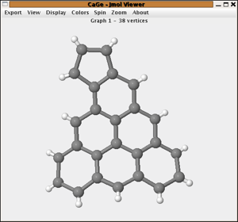
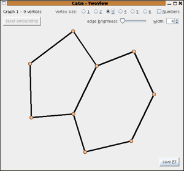
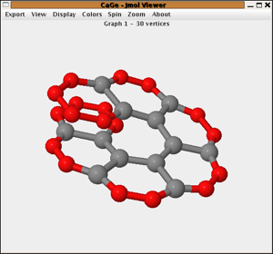

The Hydrocarbon windows
In CaGe "hydrocarbon" stands for "planar polycyclic
hydrocarbon with pentagonal and hexagonal faces" - or mathematically speaking: for
2-connected plane graphs with a distinguished outer face where all bounded faces are pentagons or
hexagons, all vertices not in the boundary of the outer face have degree 3 and all
vertices in the boundary of the outer face have degree 2 or 3. For the mathematical description
the hydrocarbons are considered with the H-atoms removed. The default is also to output and display the
structures without the H-atoms.
There are 3 different windows for hydrocarbons. These 3 differ in
the parameters describing the class.
Hydrocarbons by formula
In this window all hydrocarbons with a given constitutional formula
CxHy
and a given number of pentagons
can be generated.
You give the number of C-atoms (x in the example), H-atoms (y)
and the number of pentagons and then all
hydrocarbons (in the sense described above) are generated.
Further options allow to generate
- only structures without neighbouring pentagons (IPR)
- only strictly peri-condensed structures (the removal of the vertices contained in one face or edge will not disconnect the structure)
- only structures with a bounded number of consecutive 3-valent C-atoms in the cyclic order around the boundary. This parameter influences the local curvature of the boundary and has a connection to local overlaps of the structures.
One can also choose to output the structures with the H-atoms attached.

By boundary structure
The boundary structure of a planar polycyclic hydrocarbon is described as
the cyclic sequence of its boundary degrees. The boundary structure of
azulene would e.g. be the cyclic sequence "222322223".
This generator generates all planar polycyclic hydrocarbons for a given
cyclic sequence of twos and threes that correspond to 0 ≤ p ≤ 5 pentagons.
If d stands for the number of vertices of degree two
in the boundary and t for the number of vertices of degree 3 then we have
p=6-(d-t), so the number of pentagons is uniquely determined by the boundary.
The restriction p < 6 is essential because for p ≥ 6 the number
of structures can be infinite (see e.g. nanotubes).
An option for the generator is to allow only structures with isolated pentagons and again one can choose to output structures with or without hydrogens attached.

By number of hexagons
Fusenes are planar polycyclic hydrocarbons with all bounded faces hexagons.
In this window one can generate all fusenes with a given number of hexagons.
As options one can restrict the generation to
- benzenoids (that is: fusenes that are subgraphs of the hexagonal lattice)
- catacondensed fusenes (all the vertices are in the boundary)
- Kekulean fusenes (fusenes with a perfect matching - that is a subset M of edges so that every vertex is contained in exactly one of the edges of M)

| choosing
a generator window |
||
| the
4-regular plane graphs windows |
||